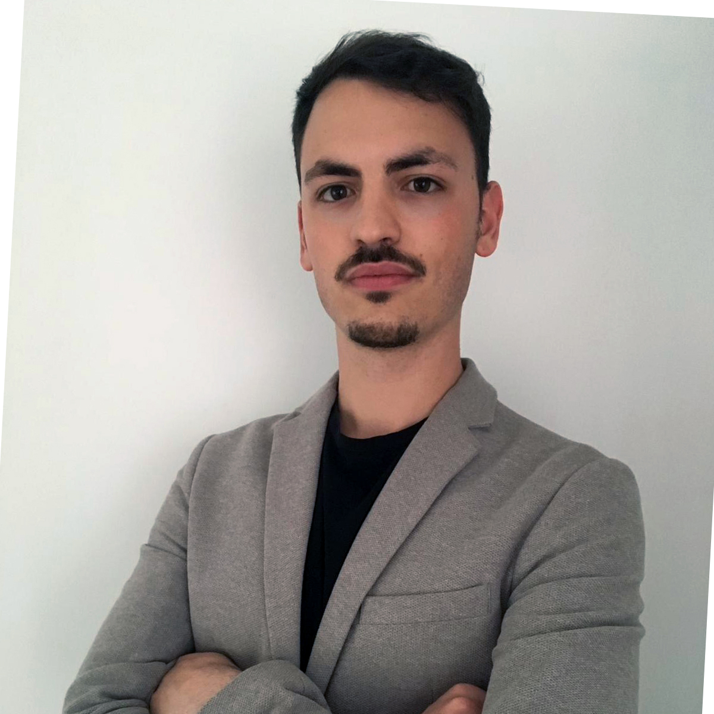

ME
Hi! This is my personal page.
I graduated as a Computer Engineer in 2017 from Politecnico di Torino which is still the place where I actually study for my Master of Science in Data Science.
I moved from my hometown, Pescara (Italy), when i was 18 years old to pursue my passion for computers. Curiosity and willing to learn have driven my interests towards Data Science and I'm always looking for chances to grow up and learn from experiences.
I graduated as a Computer Engineer in 2017 from Politecnico di Torino which is still the place where I actually study for my Master of Science in Data Science.
I moved from my hometown, Pescara (Italy), when i was 18 years old to pursue my passion for computers. Curiosity and willing to learn have driven my interests towards Data Science and I'm always looking for chances to grow up and learn from experiences.
